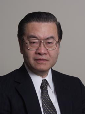
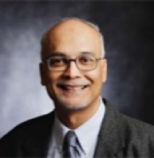
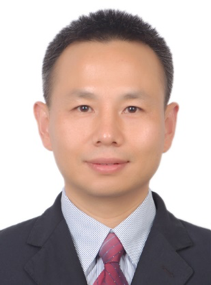
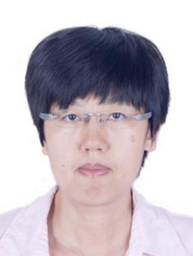
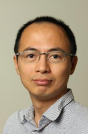
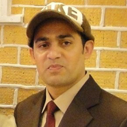

Panel Discussion: Achieving Trustworthy Cyber Systems: Challenges and Strategies
Abstract.
With the rapid progress of information technology and its extensive applications in our daily lives, the quality of cyber systems is becoming more critically important than ever. The increasing pervasiveness and intelligence of various smart devices, various increasingly powerful computing systems and networks, as well as the availability of big data and various machine learning techniques have been used to constitute the cyber systems and infrastructures, which we have to heavily rely upon now and more in the future for various services. How to achieve trustworthy cyber systems is a major objective for researchers and practitioners.
The panelists in this panel have diverse background with outstanding research accomplishments are invited to present their opinions on the challenges and strategies to achieve the objective of having trustworthy cyber systems. The session will then be open for discussions from the floor.
Panel Chair:
Stephen S. Yau, Arizona State University, USA
Panellists:
Prof. M. Jamal Deen, McMaster University, Canada
Prof. Geyong Min, University of Exeter, UK
Prof. Zheng Yan, Aalto University, Finland/Xidian University, China
Prof. Hao Wang, Norwegian University of Science & Technology, Norway
Dr. Md Zakirul Alam Bhuiyan, Fordham University, USA
Speaker: Stephen S. Yau, Arizona State University, USA
 Stephen S. Yau is Professor of Computer Science and Engineering at Arizona State University (ASU), Tempe, Arizona, USA. He served as the chair of the Department of Computer Science and Engineering at ASU in 1994-2001. Previously, he was on the faculties of Northwestern University, Evanston, Illinois, and University of Florida, Gainesville. He served as the president of the IEEE Computer Society and was on the IEEE Board of Directors and the Board of Directors of Computing Research Association. He served as the editor-in-chief of IEEE COMPUTER magazine. He organized many major conferences, including the 1989 World Computer Congress sponsored by the International Federation for Information Processing, and is currently the general chair of 2018 IEEE World Congress on Services sponsored by IEEE Computer Society. His current research includes services and cloud computing systems, trustworthy computing, software engineering, and internet of things. He received many awards, including the Richard E. Merwin Award of IEEE Computer Society, and the Outstanding Contributions Award of the Chinese Computer Federation. He is a Fellow of the IEEE and the American Association for the Advancement of Science.
Speaker: M Jamal Deen, McMaster University, Canada
Title: Achieving Trustworthy Cyber Systems: Challenges & Strategies Healthcare Systems
 M Jamal Deen is currently Distinguished University Professor and Senior Canada Research Chair in Information Technology, McMaster University, Canada. His current research interests are nanoelectronics, optoelectronics, nanotechnology and their emerging applications to health and environmental sciences. He has more than 560 peer-reviewed articles, two textbooks on “Silicon Photonics-Fundamentals and Devices” and ”Fiber Optic Communications: Fundamentals and Applications”, 12 patents, six of which have been extensively used in industry. . He received many awards and honors, include the Eadie Medal from the Royal Society of Canada; McNaughton Gold Medal (highest award for engineers), the Fessenden Medal and the Ham Education Medal, all from IEEE Canada. In addition, he was awarded four honorary doctorate degrees and a Fellow of ten national academies and professional societies including the Royal Society of Canada, CAE, IEEE, APS (American Physical Society) and ECS (Electrochemical Society). Currently, he is serving as the President of the Academy of Science, The Royal Society of Canada.
Speaker: Geyong Min, University of Exeter, UK
Title: Network Big Data Analysis for Intelligent and Reliable Future Internet
 Geyong Min is a Chair in High Performance Computing and Networking and the academic lead of Computer Science in the College of Engineering, Mathematics and Physical Sciences at the University of Exeter, UK. His recent research has been supported by European FP6/FP7, UK EPSRC, Royal Academy of Engineering, Royal Society, and industrial partners including Motorola, IBM, Huawei Technologies, INMARSAT, and InforSense Ltd. Prof. Min is the Co-ordinator of two recently funded EU FP7/Horizon-2020 projects. As a key team member and participant, he has made significant contributions to several EU funded research projects on Future Generation Internet. He has published more than 200 research papers in leading international journals including IEEE/ACM Transactions on Networking, IEEE Journal on Selected Areas in Communications, IEEE Transactions on Communications, IEEE Transactions on Wireless Communications, IEEE Transactions on Multimedia, IEEE Transactions on Computers, IEEE Transactions on Parallel and Distributed Systems, and at reputable international conferences, such as SIGCOMM-IMC, INFOCOM, ICDCS, IPDPS, GLOBECOM, and ICC. He is an Associated Editor of several international journals, e.g., IEEE Transactions on Computers. He served as the General Chair/Program Chair of a number of international conferences in the area of Information and Communications Technologies.
Speaker: Zheng Yan, Aalto University, Finland/Xidian University, China
Title: Achieving Trustworthy Cyber Systems: Challenges and Strategies Trust Management Enhanced Security with Privacy
 Zheng Yan received the BEng degree in electrical engineering and the MEng degree in computer science and engineering from the Xi’an Jiaotong University, Xi’an, China in 1994 and 1997, respectively, the second MEng degree in information security from the National University of Singapore, Singapore in 2000, and the licentiate of science and the doctor of science in technology in electrical engineering from Helsinki University of Technology, Helsinki, Finland in 2005 and 2007. She is currently a full professor at the Xidian University, China and a visiting professor and an academy research fellow at the Aalto University, Finland. Before joining the academia, she worked as a senior researcher at the Nokia Research Center, Helsinki, Finland for over 10 years (2000-2011). Her research interests are in trust, security and privacy, as well as data mining. She has published more than 170 peer-reviewed papers and solely authored two books about trust management. She is an inventor of 60+ patents. Prof. Yan is currently serving as an associate editor of the IEEE Internet of Things Journal, IEEE Access, Information Sciences, Information Fusion, JNCA, Soft Computing, SCN, etc. She also served as an organization committee member for over 40 international conferences and successfully organized IEEE CIT2014, IEEE TrustCom/ISPA/BigDataSE-2015, EAI MobiMedia2016 and ICA3PP/NSS/IEEE CIT-2017. She is a senior member of the IEEE. Recently, she achieved the IEEE ComSoc TCBD best journal paper award (2017).
Speaker: Hao Wang, Norwegian University of Science & Technology, Norway
Title: Is (Deep) Neural Networks Trustworthy?
 Hao Wang is an associate professor and the head of Big Data Lab at the Department of ICT and Natural Sciences in Norwegian University of Science & Technology, Norway. He has worked as a researcher in IBM Canada, McMaster, and St. Francis Xavier University before he moved to Norway. He received a Ph.D. degree in 2006 and a B.Eng. degree in 2000, both in computer science. His research interests include big data analytics and industrial internet of things, high performance computing, safety-critical systems, and communication security. He has published 60+ papers in international journals and conferences such as IEEE TVT, GlobalCom 2016, Sensors, IEEE Design & Test, and Computer Communications. He served as a TPC co-chair for IEEE DataCom 2015, IEEE CIT 2017, ES 2017 and reviewers for journals such as IEEE TKDE, TBD, TETC, T-IFS, ACM TOMM. He is a member of IEEE IES Technical Committee on Industrial Informatics. His webpage is www.haowang.no.
Speaker: Md Zakirul Alam Bhuiyan, Fordham University, USA
Title: Trustworthy Data Cyber for Collection Systems
 Md Zakirul Alam Bhuiyan is currently an assistant professor of the Department of Computer and Information Sciences at the Fordham University, NY, USA. Earlier, he worked as an assistant professor at the Temple University. His research focuses on dependable cyber physical systems, WSN applications, big data, cloud computing, and cyber security. He has served as a lead guest editor and associates editor for IEEE TBD, ACM TCPS, INS, FGCS, IEEE IoT journal, Cluster Computing, TJCA, and so on. He has also served as a general chair, program chair, workshop chair, publicity chair, TPC member, and reviewer of international journals/conferences. Currently, he is a general chair for IEEE DASC 2018 (Greece), DependSys 2018 (China), and a program chair for IEEE I-SPAN 2018 (China) and IEEE SmartWorld 2018 (China), and a TPC member of IEEE INFOCOM 2018 (USA). He has received the IEEE TCSC Award for Excellence in Scalable Computing for Early Career Researchers (2016-2017) and the IEEE Outstanding Leadership Award (2016) and Service Award (2017). He is a senior member of IEEE and a member of ACM.